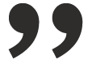
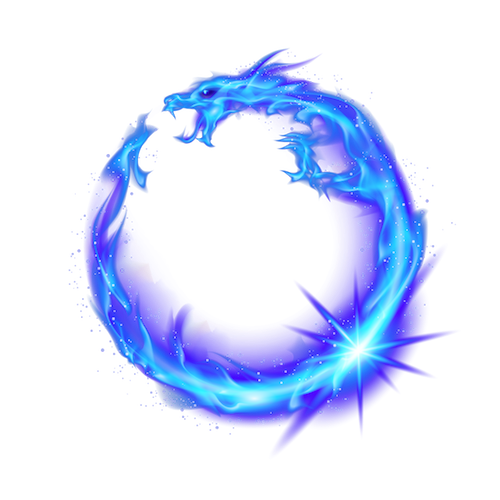

Den som vid sidan av arbetet med datorn utvecklar
sitt seende och sin skarpsynthet genom att teckna,
hon eller han kan bli den webb-designer som konstnärligt
sett skiljer sig från mängden. Den som ser det andra
inte har sett. Och om jag idag var 17 år, och en dag
hoppades på att kunna försörja mig genom att arbeta med
webb-design, så skulle jag gå i Karl-Erik Forsbergs fotspår.
Jag skulle läsa allt jag kom över om typografi, jag
skulle skaffa mig kalligrafiska redskap och hänge mig åt
hantverket trots, eller just därför, att det är med
datorer jag skall arbeta."
HC Ericson, professor grafisk design Mittuniversitetet
Publicerad 2012-11-01
Web design, typografi, kalligrafi
Artikel 2
Välja typsnitt är ibland första steget
Att välja ett bra typsnitt är bara en liten del av god typografi.
Ännu viktigare är vad du gör med typsnittet som storlek, stil,
radavstånd, radlängd, färg, kontrast …
Det tvistas om seriff- eller sans-seriff typsnitt är bäst för
skärmläsning. De flesta verkar anse att linjärer (sans-seriffer) är bäst
för skärm. Och det stämmer, generellt sett, men det finns seriff-typsnitt
som är gjorda med skärm i åtanke och som är bättre än sans-seriffer
gjorda för papper.
Viktigast är att använda ett typsnitt som är anpassat för skärm och inte
för papper, tex Geneva, Charcoal, Lucida Grande, Verdana, Georgia mfl.
Eller de nya “C-typsnitten“ från Microsoft:
Sans-serif
Calibri
Candara
Corbel
Serif
Cambria
Constantia
Monospace
Consolas
Det finns tio typsnitt som du kan vara säker på att alla har (nåja),
dessa följer med Windows, MS Office, Internet Explorer och Mac;
Drakia väljer ut dom allra bästa drakarna från
hela världen.
Ett bra typsnitt för skärm har en relativt
hög x-höjd och är något bredare med kraftiga linjer. Allt för att
skapa ett större ljusrum inuti bokstaven. Det gör naturligtvis att
typsnittet tar större plats än ett typsnitt för papper.
Ett typsnitt för skärm kan inte innehålla lika mycket detaljer
som varierande linjetjocklekar och seriffer. Gör att typsnitt för
skärm kan se stora och klumpiga ut på papper. Men det går ju att
lösa genom att ha en stilmall för skärm och en för utskrift.
Mixtra inte för mycket med bokstavsmellanrummen i brödtext.
Värdena är redan bra som standard. Men rubriker kan behöva justeras.
Respektera texten och läsaren
Kursiv och understruken text är mer svårläst på
skärm. Så markera kortare citat med fet text, eller längre citat
med ett eget stycke.
Radavstånd och marginaler behöver vara något större på skärm
jämfört med papper. Radlängd kan vara ungefär densamma som för papper,
55 ± 10 tecken. Tänk på att webbläsare inte kan avstava (man kan ge
avstavningsförslag i html-koden men är det mycket text blir det för
mycket jobb). Marginaljustering går alltså att använda men det blir
inte bra. 99% använder vänster justering, man behöver inte ange det
i koden det är satt som standard-värde.
De flesta webbläsarna är för snåla med radavstånd, öka på 1-2
pixlar eller 10-20 %.
"Även det bästa typsnitt kan fördärvas av en
slarvigt genomförd typografi."
Längre tillbaka i tiden, då de flesta klassiska typsnitten gjordes,
var problemet att vi hade svårt att få bra läsbelysning plus att
papperet inte var lika bra som idag. Idag är en del skärmar så
ljusstarka att det kan vara svårt att läsa svart text på vit botten.
En vanlig 24 tums-skärm har ungefär samma ljusstyrka som 70
stearinljus.
Här
kan du kontrollera kontrasten mellan de färger du valt. För stor
kontrast kan vara lika problematisk som för liten kontrast.
Här
kan du se hur din webbplats ser ut för någon som är färgblind.
Kom ihåg att kontrollera färgerna på dina länkar också.
Prydnadsdrake
Vi säljer även souvenirdrakar. Alla är
självklart skapade av rent drakguld.
Kom ihåg de typografiska detaljerna
Det finns ingen anledning till att inte ha korrekta citat-tecken,
tanke-streck osv på internet.
Här finns en av många sidor där man kan leta reda
på koden för specialtecken - character entities.
Indrag istället för blankrad fungerar alldeles utmärkt. Men ett
fyrkantsindrag blir i minsta laget, gärna två fyrkanter. Eller varför
inte använda anfang.
Siffror bokstaveras upp till tolv.
Gemena siffror fungerar jättebra men finns inte i alla typsnitt.
Kapitäler går naturligtvis att använda men en skärm är oftast för grov
för att man ska kunna se skillnad på äkta och falska kapitäler.
Drakarmband

Nästan magiskt drakarmband.
Till försäljning i vår onlinebutik.
Mikael Becker
Publicerad 2012-11-01
Design, typografi, läsbarhet, läslighet, färg
Artikel 4
Foto: My Johansson
Frames och tables ska inte användas för layout
Använd inte frames, använd server-side includes istället (eller
php, asp …). Använd inte tabeller för layout, använd CSS. Använd
alltid H1-H6 för rubriker, om det inte räcker, lägg till tex h1.svart,
om du vill ha flera H1-rubriker med olika färg. Google och andra
blindsurfare förstår då fortfarande att det är en rubrik.
Utseendemässigt är det ingen skillnad på <i> och <em>, båda gör
texten kursiv, men <i> är bara dekoration, <em> emphasis talar också
om för besökaren att detta är något speciellt. Skilj på innehåll och
utseende. Alltså: innehållet struktureras med HTML, medan utseendet
styrs helt och hållet av CSS. Titta på tex
CSS Zen Garden
för inspiration.
Använd gärna relativa mått som em, % och inte absoluta mått som px
eller pt. Ev kombinerat med att sätta min- och max-värden för kritiska
delar, tex menyns spaltbredd.
Bild, ljud och video ska ha motsvarande innehåll som text.
Med sunt förnuft kommer man långt
Om det finns en standard, använd den. Tex om jag klickar på logotypen
ska jag komma tillbaka till förstasidan.
Du ska inte förvirra eller irritera dina besökare. Bakåtknappen vet
alla var den sitter.
Du måste kunna grunderna först
Reglerna eller snarare riktlinjerna har finslipats under lång tid. Du
ska givetvis känna till dessa, men reglerna ska också tänjas, prövas,
ifrågasättas och utvecklas.
Typografin och våra läsvanor har nog utvecklats/ändrats mer mellan 1996
(då Matthew Carter skapade Georgia och Verdana på uppdrag av Microsoft och
internet slog igenom hos gemena man i Sverige) och idag än vad som skedde
under hela 1900-talet.